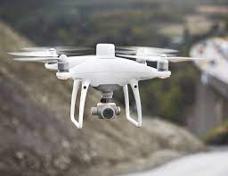
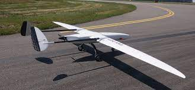

If you’ve seen small drones in your local park, they’re likely multi-rotor models. These designs have several fans above their compact body. The multiple propellers create powerful lift and give the pilot precise control. Their small size and excellent control make multi-rotor drones a great option for aerial photography. They can hover easily and take off vertically, too, adding another level of versatility.
As their name suggests,fixed-wing drones look more like conventional planes, requiring a runway or a catapult to launch. They don’t have vertical take-off ability like quadcopters and single-rotor drones, and this unmanned aircraft system can’t hover.
These helicopter-style drones combine the best attributes of tiny, multi-rotor devices and large, single-wing units. Their reliance on rotors helps these devices hover and launch vertically. They tend to be larger than their tiny counterparts, suiting them to carry larger payloads. The lack of multiple motors makes them more efficient than multi-rotor models.

Fixed-wing hybrid models are the newest drone technology to launch into the marketplace. They combine the long range and flight time of fixed-wing drones with the vertical take-off ability of a rotor-based device. That versatility makes this hybrid hardware a great choice for commercial drone use. Some companies are already using these models for its delivery purposes.